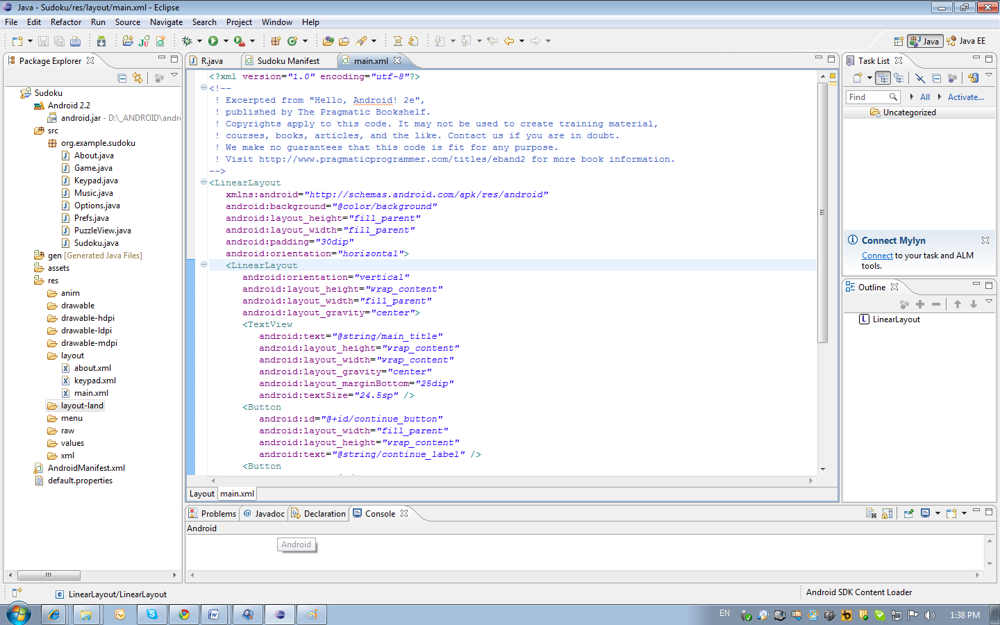
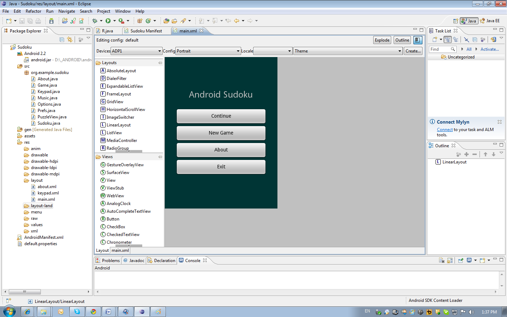
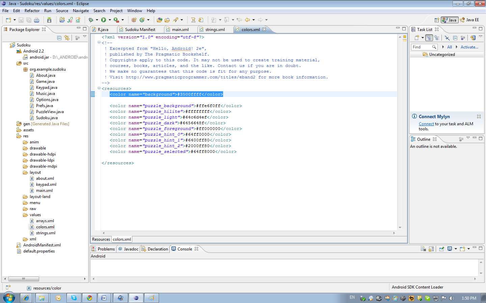
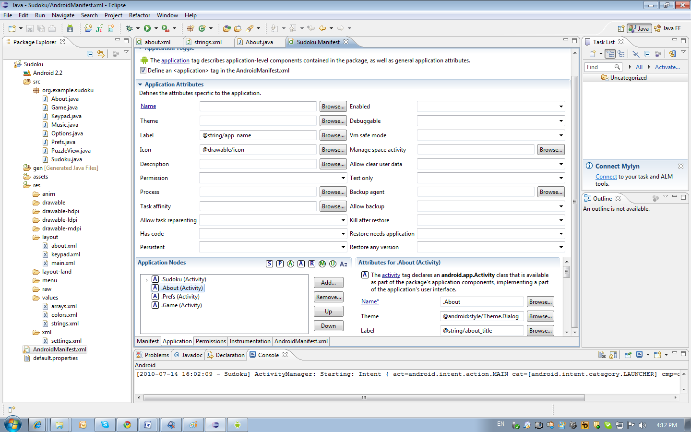
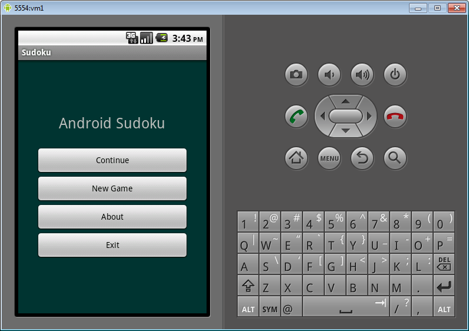
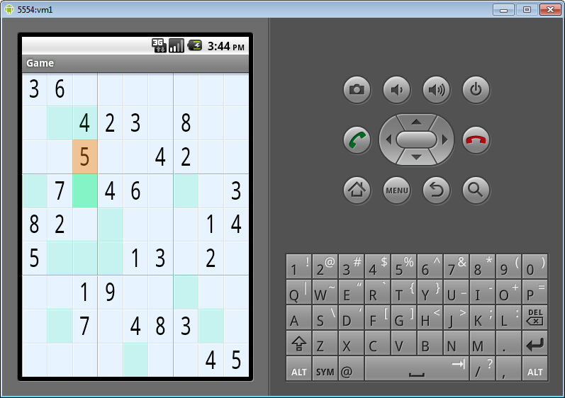

/* Моя кошка замечательно разбирается в программировании. Стоит мне объяснить проблему ей - и все становится ясно. */
John Robbins, Debugging Applications, Microsoft Press, 2000

/* Моя кошка замечательно разбирается в программировании. Стоит мне объяснить проблему ей - и все становится ясно. */
John Robbins, Debugging Applications, Microsoft Press, 2000
Строго говоря, описанный пример нельзя использовать в качестве тренировочного, так как автор книги явно запретил использовать код в учебных целях. Но автор перевода выложил свою работу на . Надеюсь, автор оригинала простит его и меня за перепечатку.
В статье описано создание игры Sudoku из книги
Будем рассматривать готовый проект игры Судоку ().
Для загрузки проекта в Eclipse ножно выполнить такую последовательность действий:
Игровое меню описано в файле res/layout/main.xml. Все элементы находятся в виде одной колонки в контейнере LinearLayout.
 Обратите внимание, что все текстовые надписи (android:text) берут данные из ресурсов. Например, запись android:text="@string/main_title" указывает, что текст нужно искать в файле res/values/string.xml в узле с именем main_title. Цвет фона также содержится в ресурсах (android:background="@color/background"), но в файле color.xml (#3500ffff).
Элементы управления, к которым нужно получить доступ из кода, должны иметь id. У кнопок есть id (android:id="@+id/continue_button") для того что бы было можно присоединить к кнопке обработчик нажатия. Знак плюс указывает, что для кнопки нужно создать идентификатор в файле /gen/org.example.sudoku/R.java (public static final int continue_button=0x7f0b000b;). Этот файл генерируется автоматически и не рекомендуется его изменять. Файл содержит класс R через него можно обратиться к любому элементу интерфейса и другим ресурсам.
Рассмотрим создание окна с информацией о программе. Разметка этого окна находится в файле /res/layout/about.xml. Код класса описан в файле /src/org.example.sudoku/About.java. Activity связана с разметкой в файле AndroidManifest.xml. Этот файл можно просматривать или через редактор или в виде XML. На разных вкладках редактора можно выбрать различные разделы файла. В разделе Application находятся параметры Activity. Обратите внимание, что параметр Theme имеет значение @android:style/Theme.Dialog. Благодаря этому стиль окна больше похож на модальный диалог.
Вызов окна с информацией о программе осуществляется из класса Sudoku по нажатию кнопки About. Класс Sudoku написан так, что сам обрабатывает событие Click (public class Sudoku extends Activity implements OnClickListener). В методе public void onClick(View v) определяется какая кнопка вызвала событие и выполняется соответствующий код. Для показа окна About вызывается соответствующий Intent.
case R.id.about_button:
Intent i = new Intent(this, About.class);
startActivity(i);
break;
Обработчики событий также могут устанавливаться на конкретные элементы управления. Например в классе Keypad при создании класса в методе setListeners() устанавливаются обработчики для отдельных кнопок.
Пользователю нужно дать возможность выбрать уровень сложности. Это маленький диалог, в котором нужно выбрать один из нескольких вариантов. Воспользуемся классом AlertDialog. Пользователь нажимает на кнопку New Game. Обработчик нажатия это метод класса Sudoku – onClick. Далее вызывается метод openNewGameDialog, который показывает диалог выбора сложности и стартует игру с выбранным уровнем сложности. Это диалог строится с помощью класса AlertDialog.
private void openNewGameDialog()
{
new AlertDialog.Builder(this)
.setTitle(R.string.new_game_title)
.setItems(R.array.difficulty,
new DialogInterface.OnClickListener()
{
public void onClick(DialogInterface dialoginterface, int i)
{
startGame(i);
}
})
.show();
}
Обратите внимание, что содержимое диалога (набор кнопок) строится из массива строк R.array.difficulty. Тут же назначается обработчик нажатия на кнопки диалога, который по номеру нажатой кнопки запускает новую игру с заданным уровнем сложности, вызывая метод startGame.
За игровую логику отвечает класс Game. Тут загружаются задания, проверяются условия выигрыша. Класс Game описан не в XML, а создается кодом. В методе onCreate создается View:
puzzleView = new PuzzleView(this);
setContentView(puzzleView);
puzzleView.requestFocus();
PuzzleView - это класс производный от View, в нем рисуется игровое поле и происходит обработка событий касания экрана (метод onTouchEvent) и нажатия клавиш (метод onKeyDown).
Разберем процесс рисования в Android. Для рисования нужно перегрузить метод onDraw. Метод получает объект Canvas, через который осуществляется рисование. Для задания цветов создаются обьекты класса Paint. Цвет задается в формате ARGB. Цвет лучше хранить в виде ресурсов (файл colors.xml). Paint это не только класс для хранения информации о цвете. Например при рисовании текста он содержит информацию о способе закрашивания, шрифте и выравнивании текста.
Canvas содержит набор методов для рисования графики (drawRect, drawLine, drawPath, drawText и другие).
Для оптимизации графики, лучше воздержаться от создания объектов и лишних вычислений внутри метода onDraw (рассматриваемый пример реализации графики не оптимален).
Для воспроизведения музыки используется класс MediaPlayer. Музыка для игры добавлена в ресурсы. Нужно просто скопировать нужные файлы в папку /res/raw (форматы WAV, AAC, MP3, WMA, AMR, OGG, MIDI).
Для начала нужно создать экземпляр класса MediaPlayer:
mp = MediaPlayer.create(context, resource);
тут context это обычно класс, который инициирует запуск музыки, resource – идентификатор ресурса с музыкой. Для управления воспроизведением используют методы start, stop и release.
В игре музыка воспроизводится в главном меню (запуск из класса Sudoku) и в игровом процессе (запуск из класса Game). Для управления воспроизведением создан класс Music. Класс содержит статический экземпляр MediaPlayer, что позволяет не создавать отдельный проект для каждого запуска звукового ресурса.
В классах Sudoku и Game переопределены методы onResume и onPause, в которых запускается музыка при старте Activity и останавливается при деактивации.